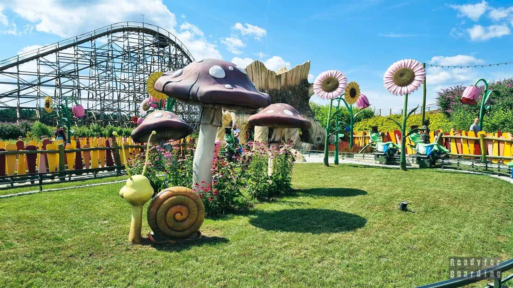
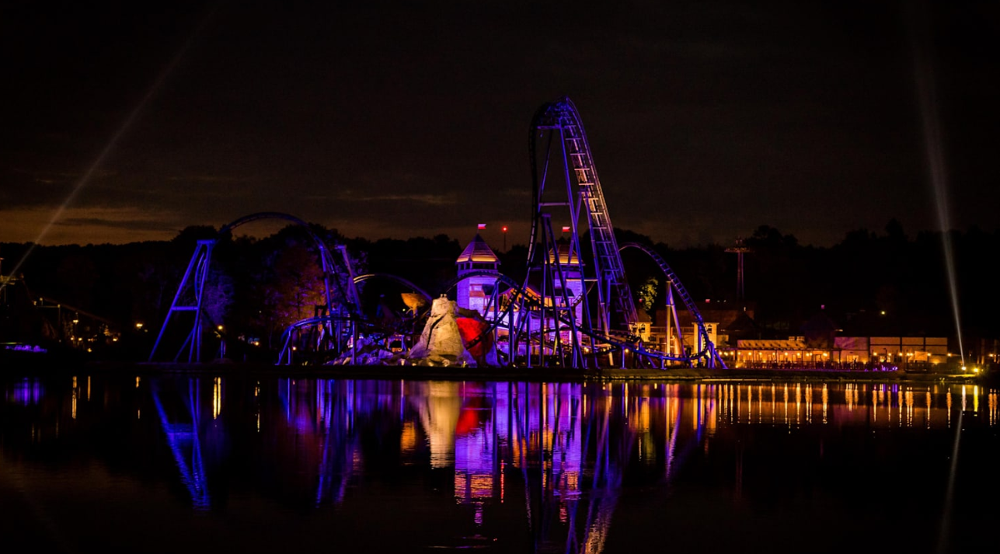
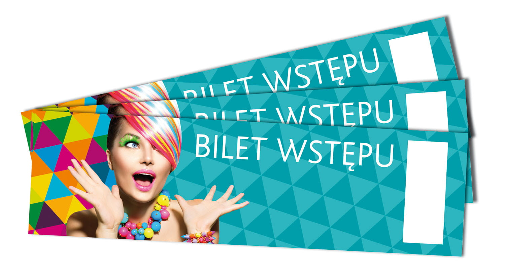

FIKOHOP to miejsce stworzone dla całych rodzin — dlatego oprócz mocnych wrażeń i atrakcji dla fanów adrenaliny, w naszym parku znajdziecie również wiele propozycji dla najmłodszych gości. Zależy nam na tym, aby każde dziecko mogło spędzić tu czas bezpiecznie, komfortowo i przede wszystkim… super się bawić!
Na dzieci czekają spokojniejsze przejażdżki, kolorowe atrakcje oraz miejsca, w których mogą bawić się i odkrywać park w swoim tempie. To świetna opcja dla maluchów, które dopiero zaczynają swoją przygodę z parkami rozrywki, ale też dla starszych dzieci, które chcą spróbować czegoś nowego — bez stresu i bez przesadnie ekstremalnych emocji.
Rodzice mogą być spokojni — atrakcje dla najmłodszych są przygotowane tak, aby zapewnić maksymalną frajdę i pełne bezpieczeństwo, a cała przestrzeń sprzyja wspólnemu, rodzinnemu spędzaniu czasu. Zaplanujcie wizytę w FIKOHOP i przekonajcie się, że u nas świetnie bawią się nie tylko dorośli, ale też najmłodsi! 🎡✨
Zapraszamy Was na wyjątkowe Walentynki w parku FIKOHOP, podczas których połączymy romantyczny klimat z najlepszą rozrywką i ogromną dawką adrenaliny! Jeśli chcesz spędzić ten dzień inaczej niż zwykle, zrobić niespodziankę drugiej połówce albo po prostu wyjść z domu i dobrze się bawić — ten event jest dla Ciebie. W FIKOHOP Walentynki to nie tylko serduszka i zdjęcia, ale przede wszystkim emocje, śmiech i wspólne wspomnienia, które zostają na długo.
Na czas wydarzenia cały park zamieni się w walentynkową strefę zabawy — pojawią się specjalne dekoracje, tematyczne elementy w różnych częściach parku oraz wyjątkowa atmosfera, która od razu wprawi Was w dobry humor. Przygotowaliśmy również walentynkowe strefy foto, gdzie będziecie mogli zrobić pamiątkowe zdjęcia z bliską osobą albo ekipą znajomych. Nieważne czy przychodzisz w parze, z przyjaciółmi czy rodziną — każdy znajdzie tu coś dla siebie.
W trakcie eventu będzie można wziąć udział w walentynkowych konkursach i zabawach (z drobnymi nagrodami i niespodziankami), a dla par przygotowaliśmy specjalne aktywności, które dodadzą temu dniu jeszcze więcej klimatu. Dodatkowo, w wybranych godzinach na terenie parku pojawią się animacje i atrakcje tematyczne, dzięki którym Walentynki w FIKOHOP będą naprawdę wyjątkowe.
Oczywiście najważniejsze zostaje to, co kochacie najbardziej — nasze atrakcje! Rollercoastery, strefy rodzinne i przejazdy dla odważnych będą działały normalnie, ale w walentynkowej oprawie. To idealny moment, żeby przeżyć coś razem: jeden przejazd, drugi, trzeci… i nagle okazuje się, że to najlepsza randka w życiu 😄🎢
Nie zapominamy też o strefie gastronomicznej — na czas Walentynek pojawią się walentynkowe akcenty i słodkie propozycje, które świetnie pasują do zimowego klimatu. Możesz złapać coś ciepłego, odpocząć po intensywnych emocjach i wrócić na kolejne atrakcje z nową energią.
📌 Wpadnijcie do FIKOHOP i świętujcie Walentynki po swojemu!
To idealna okazja, żeby spędzić czas z kimś ważnym, przeżyć coś nowego i stworzyć wspomnienia, które zostaną na długo ❤️✨ Zapraszamy wszystkich zakochanych, przyjaciół i osoby, które po prostu chcą przeżyć świetny dzień w niesamowitej atmosferze!

Już niedługo w FIKOHOP wystartują nocne przejazdy, które całkowicie zmieniają klimat tej atrakcji!
Wprowadzamy specjalne podświetlenie LED na torze, efekty świetlne w zakrętach oraz w tunelach, dzięki czemu przejazd wygląda jeszcze bardziej spektakularnie.
Po zmroku park nabiera zupełnie nowego charakteru — migające światła, dynamiczne iluminacje i wyjątkowa atmosfera sprawiają, że poczujesz się jak w scenie z filmu akcji
🎢🔥
Jeśli chcesz przeżyć coś naprawdę wyjątkowego, koniecznie odwiedź nas wieczorem — takiej jazdy nie da się opisać, to trzeba zobaczyć na żywo!
JUŻ WKRÓTCE WIĘCEJ INFORMACJI!!!!!
Informujemy, że ze względu na prace modernizacyjne i remonty na terenie parku, FIKOHOP będzie zamknięty w dniach 25.02 – 06.03.
W tym czasie ulepszamy infrastrukturę oraz przygotowujemy nowe atrakcje, aby Wasza wizyta była jeszcze bardziej komfortowa i pełna wrażeń.
Przepraszamy za utrudnienia i dziękujemy za wyrozumiałość — wracamy już 07.03 z nową energią i jeszcze większą dawką zabawy
To już kolejny rok, odkąd wspólnie tworzymy miejsce pełne emocji, śmiechu i niezapomnianych przygód! Z tej okazji zapraszamy wszystkich gości na urodzinowy tydzień w FIKOHOP, podczas którego park zamieni się w prawdziwą strefę świętowania. Będzie głośno, kolorowo i totalnie wyjątkowo – dokładnie tak, jak przystało na urodziny najlepszego parku rozrywki 😄
Przygotowaliśmy dla Was specjalne atrakcje urodzinowe, które będą dostępne przez cały dzień: dodatkowe animacje, konkursy z nagrodami, urodzinowe dekoracje w całym parku oraz mnóstwo niespodzianek ukrytych w różnych strefach. Na miejscu pojawią się także nasi animatorzy, którzy zadbają o świetną atmosferę i zachęcą Was do wspólnej zabawy – niezależnie od wieku!
Nie zabraknie również wyjątkowych momentów: w wybranych godzinach odbędą się urodzinowe mini-wydarzenia, a na koniec dnia zaplanowaliśmy wielkie wspólne świętowanie z muzyką i klimatycznym finałem, którego nie da się przegapić. Jeśli marzy Ci się dzień pełen adrenaliny, śmiechu i wrażeń – to idealny moment, żeby wpaść do nas z paczką znajomych albo całą rodziną.
Dodatkowo, w trakcie urodzinowego tygodnia pojawią się limitowane promocje na wybrane bilety oraz specjalne urodzinowe oferty w strefie gastronomicznej – bo świętowanie bez czegoś słodkiego po prostu się nie liczy 🍭🍩
Dziękujemy, że jesteście z nami i wracacie do FIKOHOP po więcej! To właśnie Wy tworzycie klimat tego miejsca, dlatego urodziny parku to nie tylko nasze święto – to święto wszystkich, którzy kochają dobrą zabawę 🎢✨ Wpadajcie, świętujcie razem z nami i przygotujcie się na dzień, który będzie wspominany jeszcze długo!

Do 31 stycznia trwa specjalna promocja na bilety wstępu do parku FIKOHOP. To świetna okazja, żeby zaplanować zimowy wypad z rodziną lub znajomymi i skorzystać z naszych atrakcji w niższej cenie. Czeka na Was mnóstwo emocji, dobrej zabawy i wyjątkowy klimat całego parku
Ważne — promocyjne bilety dostępne są wyłącznie przy kasie na miejscu i obowiązują do wyczerpania puli. Jeśli chcesz mieć pewność wejścia, najlepiej pojawić się wcześniej i zgarnąć bilety zanim oferta dobiegnie końca
Nie przegap tej okazji! Styczeń to idealny czas na odwiedziny — mniej tłumów, więcej komfortu i ten sam poziom adrenaliny. Wpadnij do FIKOHOP i rozpocznij rok od solidnej dawki zabawy! 😄🎡